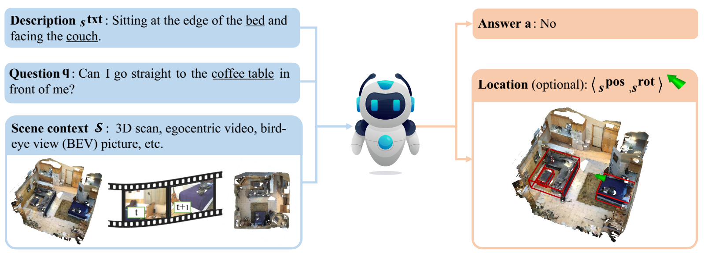
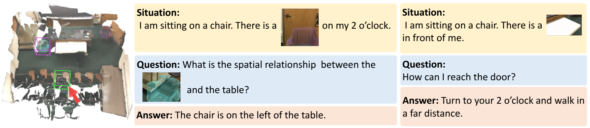
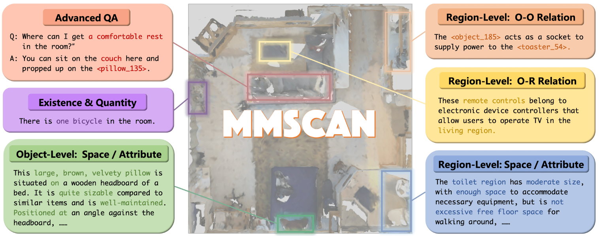

5th 3D Scene Understanding for Vision, Graphics, and Robotics
CVPR 2025 Workshop, Nashville TN, 2025
Challenge
This year we establish three challenges on multi-modal understanding and reasoning in 3D scenes:-
Track1: Situated QA (SQA)
Featuring SQA3D benchmark, answer a question given a scene and a sentence that describe the situation of an agent in that scene. You may use the ground truth location in this task.- Overview: Please refer to this slide for an overview and this technical report for more details.
- Challenge Data: The participants are provided with training, validation (questions & answers) and testing set (questions). Follow this instruction for data organization. A codebase with baseline models is also available.
- Contact: For any additional questions regarding the SQA challenge, please contact Baoxiong Jia.
-
Track2: Multi-modal Situated QA (MSQA)
Featuring MSQA benchmark, answer the question given interleaved text, image, and point cloud for situation and question. The benchmark is designed to evaluate the model's ability to understand the fine-graned attribute of the objects, spatial relations, and the situation awareness in the 3D scene.- Overview: You can refer to the website and the paper paper for more details.
- Challenge Data: The participants are provided with training, validation (questions, situations, answers) and testing set (questions, situations). A codebase with baseline models for MSQA is available.
- Contact: For any additional questions regarding the MSQA challenge, please contact Xiongkun Linghu.
-
Track3: Hierarchical Visual Grounding (HVG)
Hierarchical Visual Grounding Task in MMScan benchmark: From region to object level, from a single target to inter-target relationships, locate the target object in a scene based on a given description, covering holistic aspects of spatial and attribute understanding.- Overview: You can refer to this website for an overview and our paper for more details.
- Challenge Data: Challenge Data: The participants are provided with training, validation (language prompts & ground-truth boxes) and testing set (language prompts). Follow the instructions to get familiar with data organization and MMScan APIs. All the code for MMScan is available here.
- Contact: For any additional questions regarding the HVG challenge, please contact Jingli Lin.



Submission guidelines
- The deadline of submitting your result is June 10 2025. The winner will be announced on June 11 2025. The winner of each task will be invited to give a short talk during the workshop.
- This year we will be hosting our evaluation server on EvalAI, please follow the instruction for generating the testing result files (.json) under each challenge track and submit it online.
- The evaluation server will be online in Mid March 2025, stay tuned!
- If you have any questions regarding result submission or the challenge, please contact Baoxiong Jia.